Miscellanea
Tastiera Personalizzata con Caporali - Windows 10
23 giugno 2020
⌨️ Come personalizzare la propria tastiera per poter inserire le caporali? Semplice: mappandola.
Ogni editore ha le sue preferenze quando si tratta di formattazione dei dialoghi.
Tuttavia questo non ci proibisce di scrivere con le nostre regole editoriali, purché siano coerenti con l'intero documento. Io, per esempio, non posso fare a meno delle virgolette basse doppie, dette anche caporali (« »), uno dei formati più usati in Italia per i dialoghi.
Se siete arrivati a questo articolo è perché davvero non ne potete più di inserire interminabili combinazioni nella tastiera solo per avere un simboletto ottenibile con una singola battuta.
Voglio quindi condividere un comodissimo sistema per avere le caporali (o qualunque altro simbolo di punteggiatura vogliate applicare) sempre a portata di mano.
⌨️ Step 1: Installare Microsoft Keyboard Layout Creator
-
- Scarica e installa l’ultima versione di Microsoft Keyboard Layout Creator.
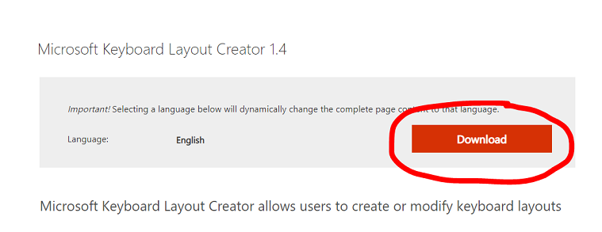
⌨️ Step 2: Caricare la tua attuale tastiera
- Apri Microsoft Keyboard Layout Creator
- Clicca su File à Load Existing Keyboard
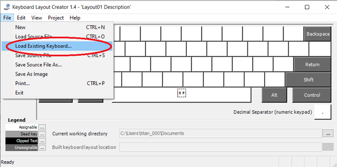
3. Scegli la tastiera che stai usando al momento (Italiano nel mio caso).
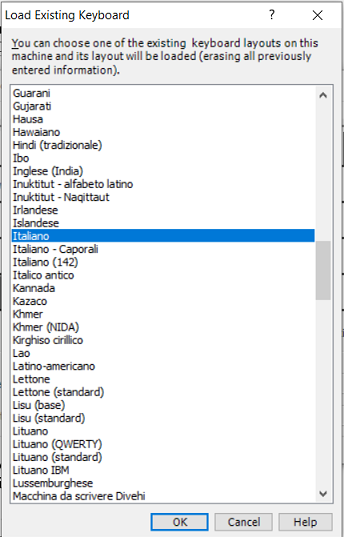
4. La tastiera virtuale si popolerà rispecchiando la tua attuale tastiera.
⌨️ Step 3: Mappare la nuova tastiera
- Clicca sul tasto che vuoi modificare (nel mio caso è il simbolo di maggiore e minore).
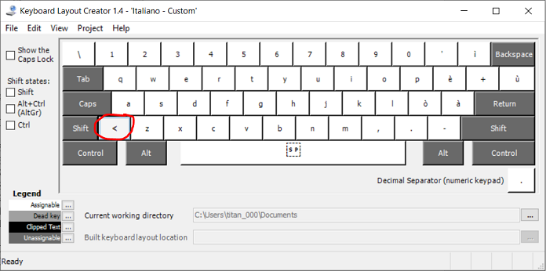
2. Nella finestrella che si aprirà, cancella il vecchio tasto e cambialo con il simbolo « (puoi fare copia-incolla oppure usare la combinazione alt+174).
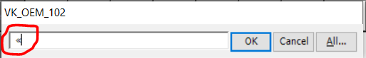
3. Ora, per la caporale di chiusura, clicca con il tasto destro sullo stesso tasto che hai modificato prima.
4. Seleziona Properties for “…” in all SHIFT states (questo significa che stai mappando il tasto quando SHIFT è premuto.)
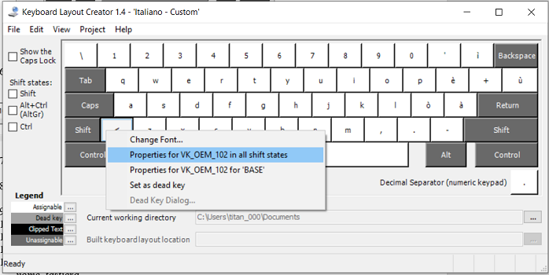
-
- 5. Nel campo “shift+<key>” cancellare il vecchio valore e inserire il simbolo » (puoi fare copia-incolla oppure usare la combinazione alt+175).
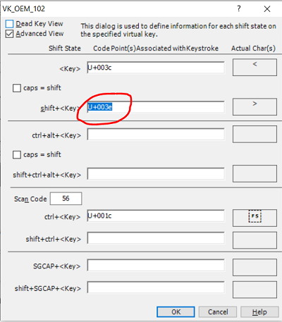
⌨️ Step 4: Salvare la nuova tastiera mappata
- Clicca su File e poi Save source file as…
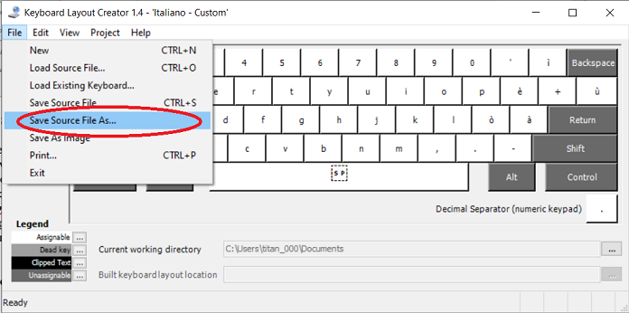
2. Salvare con nome_tastiera (nome a scelta, io l’ho chiamato “caporali”).
3. Accetta l’eventuale messaggio in inglese in cui ti si chiede di rivedere i dettagli del nuovo layout.
4. Assegna un nome nel campo “Name”. Io ho chiamato il nuovo Layout “Italiano – Caporali”.
5. Assegna una descrizione nel campo “Description”. Sempre “Italiano – Caporali”.
6. Se vuoi puoi cambiare compagnia e Copyright a nome tuo, ma è del tutto facoltativo.
7. Clicca OK.
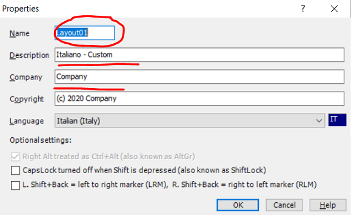
⌨️ Step 5: Installare la nuova tastiera
- Vai nella cartella di destinazione del salvataggio (di solito “Documenti”) e apri la cartella
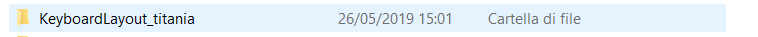
2. Fai doppio click su “setup”
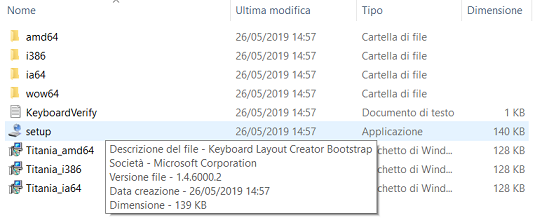
3. La nuova tastiera è installata
⌨️ Step 6: Come usare la nuova tastiera
- Clicca sul tasto Windows (Start)
- Vai su Impostazioni
- Vai su Data/Ora e Lingua
- Scegli Lingua nella barra a sinistra
- Clicca su Impostazioni tastiera, digitazione e controllo ortografia
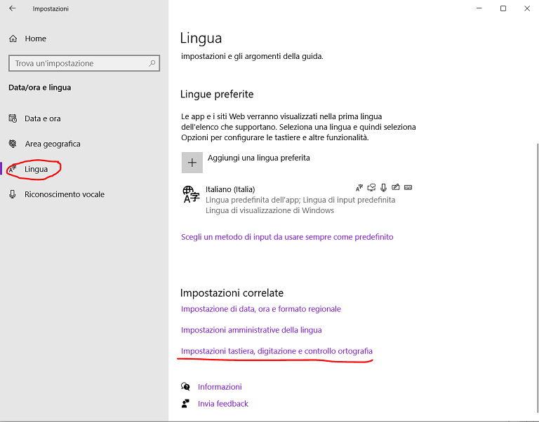
6. Scrolla verso il basso. Sotto “Altre impostazioni della tastiera” scegli Impostazioni avanzate della tastiera.
7. Spunta la casella Usa Barra della Lingua del Desktop quando è disponibile.
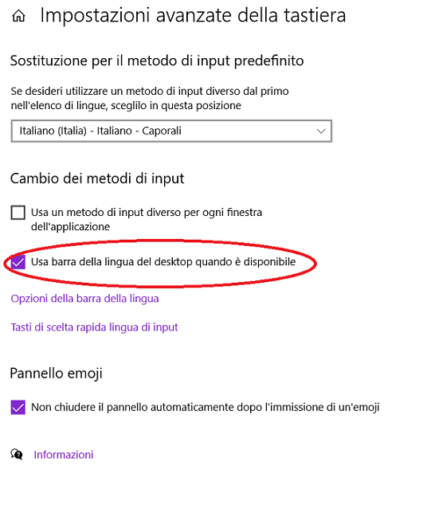
8. Ora, nella barra delle applicazioni, troverai il simbolino di una tastiera. Cliccandoci sopra puoi scegliere quale delle tastiere vuoi usare.
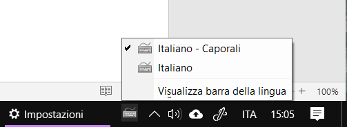
9. ATTENZIONE: Potresti non visualizzare la doppia tastiera da subito. In questo caso, prova a riavviare il computer.